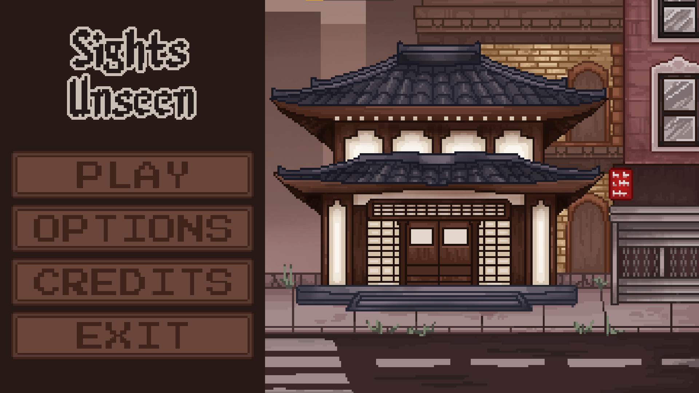
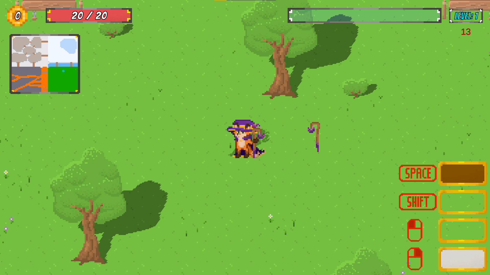

Projekty
Komputronik "Ninja" - październik
Gra obecnie tworzona na zlecenie Komputronik
Zajrzyj tutaj pod koniec października, aby zobaczyć efekty naszej pracy!
Rola: Wsparcie programistyczne, implementacja UI
Elektronik - wrzesień 2025
Gra stworzona na zlecenie Komputronik
Gra typu konkurs interaktywny, w której gracze mogą wygrywać nagrody przewidziane prez organizatora.
Rola: Główny programista backendu, programista mechanik, UI oraz animacji
We Did It, Alice! - 2025
Link do projektu
Projekt stworzony podczas GameJam'u Animatora "Rotamina - chemia w nas".
Gracz wciela się w Rotamimi - kotka, który chce pomóc tytułowej bohaterce pokonać swoje traumy.
Gra zdobyła pierwsze miejsce w konkursie.
Rola: Główny programista

Sights Unseen 2024 - 2025
Link do projektu
Gra stworzona w pięcioosobowej grupie w ramach zaliczenia przedmiotu "Zarządzanie projektami"
Gracz wciela się w postać niewidomego karateki, który musi odnaleźć się w nowej rzeczywistości po częściowej utracie wzroku.
Rola: Teamleader oraz główny programista podstawowych mechanik
Wizard Survivors - 2023
Link do projektu
Gra stworzona w siedmioosobowej grupie w ramach zaliczenia przedmiotu "Podstawy programowania" - jest to mój pierwszy zespołowy projekt gry.
Gracz wciela się w postać lisiego czarodzieja, który musi przetrwać w podzielonym na cztery biomy świecie pełnym potworów.
Rola: Teamleader oraz programista mechanik walki, poruszania się i animacji
